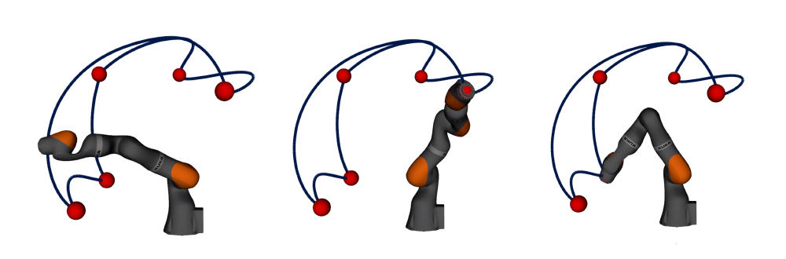
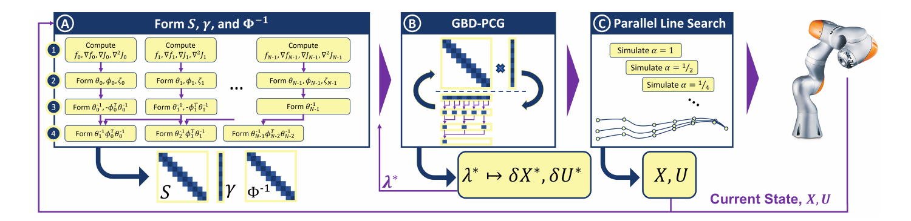
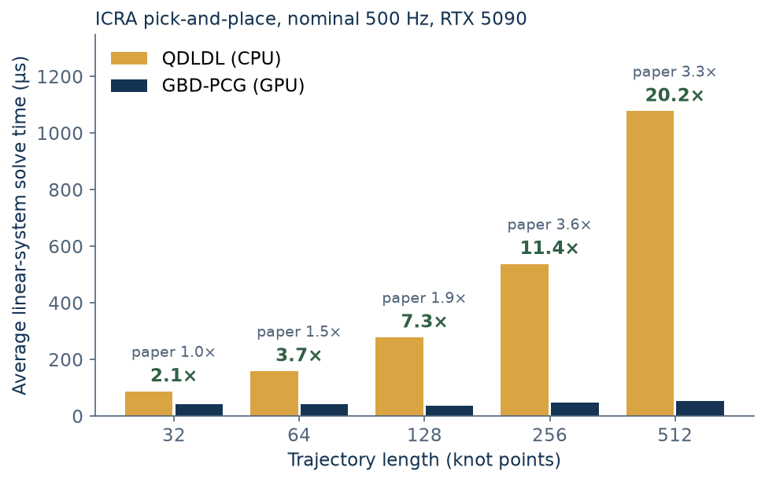
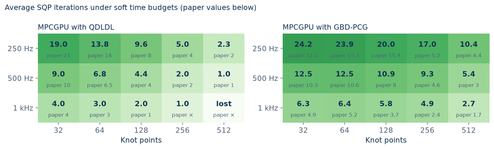

Assemble in parallel
Build the Schur system and its structured preconditioner across the trajectory horizon.
MPCGPU accelerates nonlinear model predictive control with a GPU-optimized preconditioned conjugate gradient solver.

Exploit the block-tridiagonal structure of trajectory optimization, from system assembly to the final update.

Build the Schur system and its structured preconditioner across the trajectory horizon.
GBD-PCG distributes block rows across a cooperative CUDA grid, sharing work through synchronized iterations.
Evaluate candidate steps in parallel, apply the selected update, and warm-start the next control step.
MPCGPU solves the structured linear systems in nonlinear MPC with GPU-accelerated PCG. On the five-goal pick-and-place task from our paper, the current code compares GBD-PCG with CPU QDLDL on an NVIDIA RTX 5090.
GBD-PCG averages 38–53 µs per linear-system solve at every horizon from 32 to 512 knot points, 2.1× to 20× faster than QDLDL. The iteration sweep evaluates nominal simulated control rates up to 1 kHz; it does not establish complete-controller deadline compliance.
The gain over the published results comes mainly from fewer PCG iterations per solve. A Gauss-Newton cost Hessian and a corrected horizon update make the controller's linear systems easier, GLASS makes each iteration slightly cheaper, and the SQP driver removes redundant waits while retaining the host line-search decision. How the results changed ↗
Read the protocol and complete results ↗

MPCGPU combines generated robot dynamics, GPU linear algebra and cooperative PCG in a single CUDA/C++ solver.
Generated rigid-body dynamics and analytical derivatives from the repository’s iiwa model.
GRiD repository ↗GPU linear algebra for the block operations shared by MPCGPU and GBD-PCG.
GLASS repository ↗A grid-wide block-tridiagonal PCG solver, maintained and tested inside MPCGPU.
API and examples ↗CUDA/C++ implementation: fixed-base Kuka iiwa examples, PCG and QDLDL backends, and configurable trajectory horizons. Explore the documentation ↗
Build the solver and run an end-effector tracking example. The quickstart covers dependencies, CUDA architecture selection and validation.
Open the quickstart ↗git clone --recurse-submodules \
https://github.com/A2R-Lab/MPCGPU.git
cd MPCGPU
python3 -m venv .venv
.venv/bin/pip install -r requirements-dev.txt
make build_qdldl
make examples ARCH=sm_120
LD_LIBRARY_PATH="$PWD/qdldl/build/out" \
./examples/pcg.exeChoose the architecture for your GPU. The PCG backend uses CUDA cooperative launches.
Real-Time Nonlinear Model Predictive Control through Preconditioned Conjugate Gradient on the GPU
Emre Adabag · Miloni Atal · William Gerard · Brian Plancher
IEEE International Conference on Robotics and Automation, 2024
@inproceedings{adabag2024mpcgpu,
title={MPCGPU: Real-Time Nonlinear Model Predictive
Control through Preconditioned Conjugate Gradient on the GPU},
author={Adabag, Emre and Atal, Miloni and Gerard, William
and Plancher, Brian},
booktitle={IEEE International Conference on Robotics and Automation},
year={2024}
}This work was supported by the National Science Foundation under Award 2246022. Opinions and conclusions are those of the authors and do not necessarily reflect those of the funding organization.